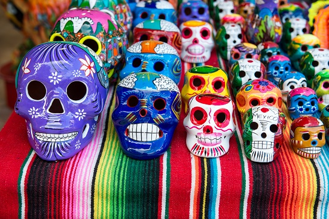
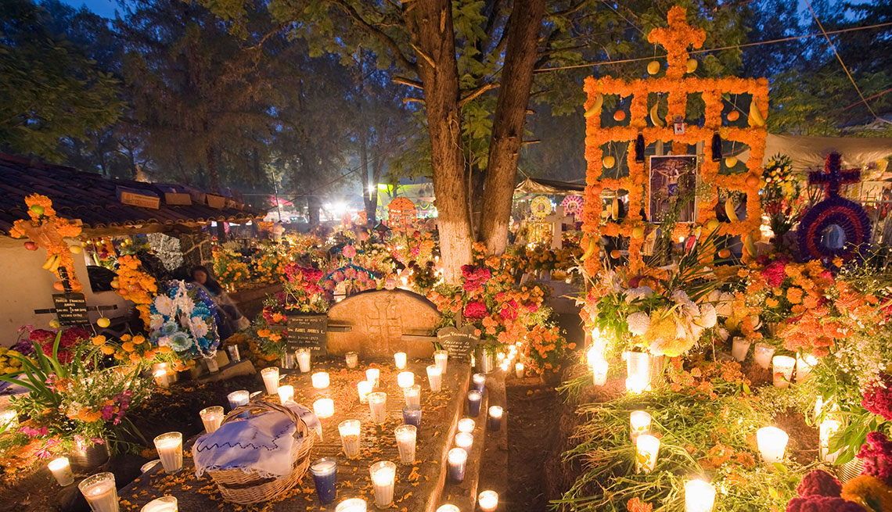
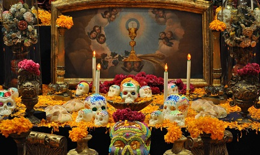

День мёртвых стали отмечать на территории современной Мексики ещё древние народы, такие как ольмеки и майя. По мнению учёных, ритуалы, связанные с почитанием умерших, отмечались ещё 2500—3000 лет назад. В период до испанской колонизации местные жители часто держали в домах настоящие черепа умерших — как своеобразную семейную реликвию, их часто демонстрировали во время различных ритуалов, они должны были символизировать смерть и воскрешение.
Во времена империи ацтеков праздник, похожий на День мёртвых, отмечался в девятый месяц ацтекского календаря, который приходится на современный август. Ацтеки праздновали этот праздник целый месяц, во время которого почиталась богиня Миктлансиуатль — богиня смерти. В современной мифологии этой богине соответствует символ Катрины. Во многих областях Мексики этот праздник празднуется в течение двух дней: 1 ноября почитают умерших детей и младенцев, который ещё называют Днём ангелочков (исп. Día de los Angelitos); 2 ноября, в День умерших (исп. Día de los Difuntos), почитают всех взрослых мертвецов.
Многие из тех, кто отмечает этот праздник, верят, что в День мёртвых души умерших могут посетить живых родственников и друзей. В этот день люди посещают кладбища, чтобы пообщаться с душами умерших, на могилах строят алтари с фотографиями и реликвиями, приносят любимые напитки и еду умерших. Все это делается для того, чтобы побудить душу усопшего посетить живых. Иногда празднования приобретают весёлую окраску, когда родственники умерших вспоминают у надгробия смешные или веселые факты из жизни умершего.

Празднование Дня мёртвых в разных регионах имеет свои отличия. Как правило, к празднику готовятся на протяжении целого года, когда понемногу собирают вещи, которые должны быть на алтаре умершего. Во время празднования 1 и 2 ноября родные украшают цветами и фруктами могилы умерших. Очень часто в украшениях на могилах используют специальные цветы — оранжевые бархатцы, которые по повериям притягивают души умерших. В Мексике эти цветы называются «цветы мёртвых» (исп. Flor de Muerto). В День ангелочков приносят игрушки для детей и сладости. Для взрослых же чаще всего приносят текилу, пиво и другие алкогольные напитки.
В Мадриде мексиканский Алтарь мёртвых можно увидеть в дни праздника в Институте Сервантеса, где его уже два года подряд строят преподаватели из Мексики.